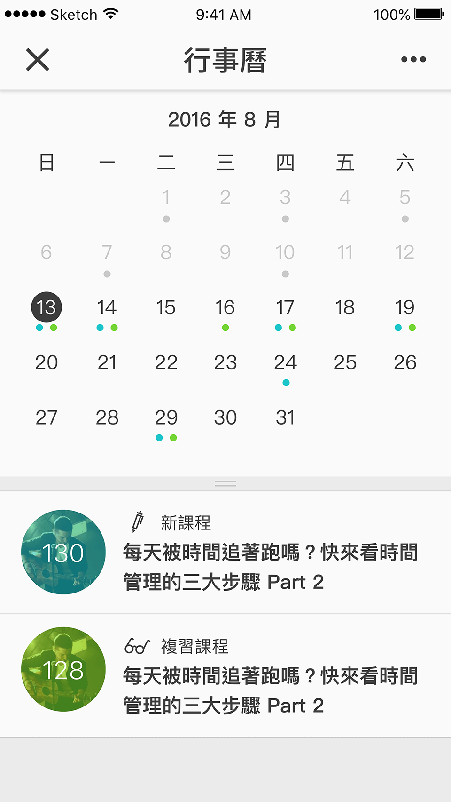
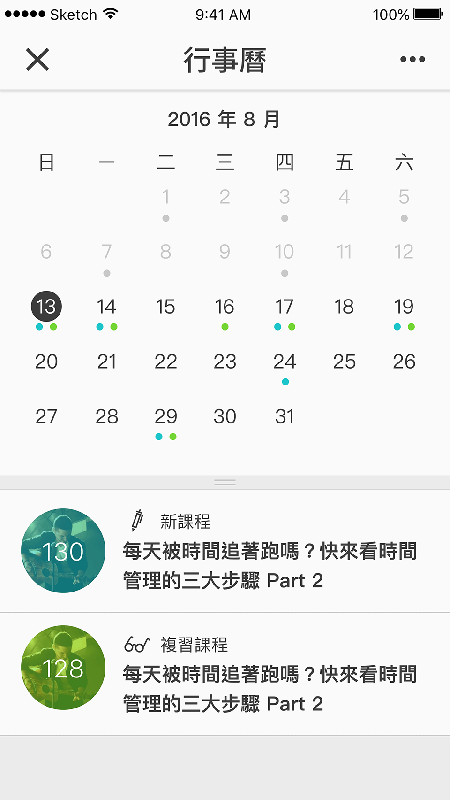

將原本在桌機上的既有的服務，收斂在 App 上。規劃時主軸思考的部分是「 如何讓舊學員能夠無痛適應新平台，又同時要優化產品原先較繁雜的架構，讓新學員享有易上手的操作體驗。」以及讓這個原先只設定在「穩定環境中專注的30分鐘聽說讀寫語言訓練」改變到「移動環境中零碎時間的非專注學習」這兩個不同的情境。此產品上架後移轉了學員依賴使用的裝置，擁有更好的黏著度。在開發時間上「無法同時調整桌機介面與核心後端機制」的前提下，盡可能完成最小可行性的產品。當現在人們提到 HERO，會說他是一個 App，這是一件令人振奮的事！
 

HERO 的許多題目都需要拼字，由於他可能是單格、多格或多題的題型，而且出現的單字很短到很長都有，學生可能會答錯了卻忘記自己原本寫什麼，但我又不希望一片紅字增加挫折感、也認為最後要看到正解，並能連貫的閱讀正確句子來加深印象，因此捨棄了別人有過的做法。送出答案後，能夠先注意到哪些地方錯了，接著看正解時以蓋牌的效果覆蓋上去，若還是無法理解，可以翻開看原來填答再次確認。此設計在實作前，做了不同版本的 Prototype，給 20 幾名陌生用戶測試後定稿。發佈至今，即使在手機上打字是這麼麻煩的事，但每週都有用手機上課的人高達 52%，其中最喜歡的題目是這題型的高達 45% ，固然無法得知操作體驗在其中影響多寡，但至少在可預期的痛點上做足了緩衝。